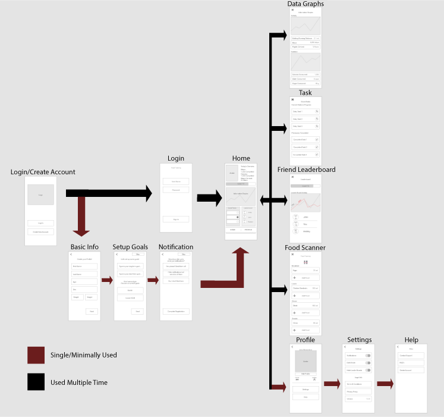

Wireframe
When it came to prototyping, we had to make a wireframe to illustrate how the app was going to look based on our persona. This app had to cater to the persona's needs and wants. Our group came up with this wireframe and following this we jumped into mapping the key path scenario.

Key Path Scenario
This is where I stepped in. Once our team completed the wireframe, I went through and made sure the key path scenario was fitting for our persona. These are the screens that John will be using every time he opens and uses Life-Up. Once I mapped out the key path, I went on to the next step.
Validation Scenario
When making this, I made sure to keep the persona in mind and label the screens he would use multiple times and screens he would rarely use. This validates the key path scenario and allows our team to see if the key path was correct. This lets our team know what screens are important and should be easily navigated to for the persona.
User Testing
For user testing, I set up all the testing time with the users and lead them. The results validated most of our ideas, as well as, giving us new or better ideas that would help improve the user experience using the app. This information helped make this application into a full suctioning prototype.